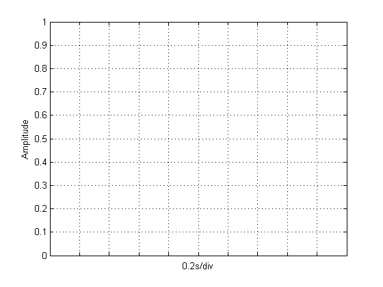
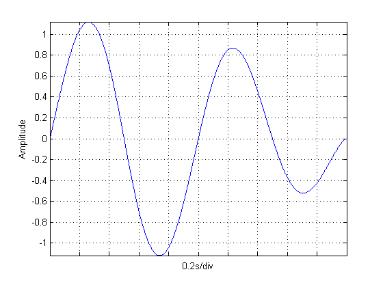

STRIPCHART makes it fairly easy to include a strip chart in your real-time data acquisition and analysis application. You feed stripchart your data, and it updates the display. It takes 2 steps to use STRIPCHART. First, you initialize the stripchart with basic information needed for the FFT (sample rate, axis width, number of traces). After that, all you need to do is pass your data to the stripchart to update.
This documentation starts with the simplest syntax for the two steps, then provides a few more advanced options.
STRIPCHART(FS,AXESWIDTH) initializes a stripchart in the current axes. This stripchart will display incoming data with a sample rate of FS Hz. The stripchart will display the most recent AXESWIDTH seconds of data.
STRIPCHART(S) updates the stripchart in the current axes with the data in vector S. The stripchart should first be initialized as above with sample rate and axes width. If not, the sample rate will be 1 Hz and the axes width will match the duration of S.
STRIPCHART(FS,AXESWIDTH,NTRACES) initializes a stripchart in the current axes with NTRACES traces. A trace is a single line on the stripchart; typically one will display one trace per channel of data. The default for NTRACES is 1. To update a stripchart with multiple traces, STRIPCHART(S) must specify a matrix S with shorter dimension length = NTRACES.
STRIPCHART(HAX, ...) defines the stripchart in specified axes HAX instead of GCA. i.e., STRIPCHART(HAX,FS,AXESWIDTH) initializes axes HAX as a stripchart, and STRIPCHART(HAX,S) updates axes HAX with vector S.
HAX = STRIPCHART(...) returns a handle to the axes initialized by the stripchart. This is useful if you allow STRIPCHART to create an axes for you, and want to be able to easily reference the axes for updates. The lines created by STRIPCHART all have the tag 'StripChart'. If you would like to manually modify the properties of these lines, their handles can be found by:
HAX = STRIPCHART(...);
HLINE = findobj(HAX,'Tag','StripChart');Create data
Fs = 1000; % Sample rate Ns = Fs*3; % Make 5 seconds worth of data t = (0:1:Ns-1)'/Fs; A = sqrt(t); A(1:Ns/2) = A(1:Ns/2); A(end:-1:Ns/2+1) = A(1:Ns/2); s = A.*sin(2*pi*t*1);
Initialize stripchart
clf
AxesWidth = 2; % Axes Width (s)
stripchart(Fs,AxesWidth);
Update stripchart
N = 50; ind = 1:N:Ns; for ii = ind stripchart(s(ii:ii+N-1,:)); drawnow;pause(.05); end;